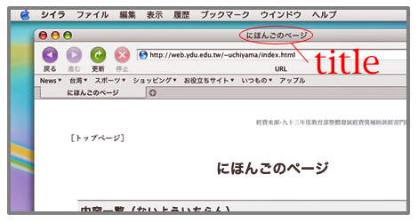

〈title要素〉を用いて、ページのタイトルを指定する。〈title要素〉の内容は、一般的なブラウザweb browserではウインドウwindowの上部に表示される。

一般に、〈title要素〉は〈head要素〉の子要素child elementとなる。また、〈title要素〉を同じページの中で２度使うことはできない。
実際にページにタイトルをつける
「ファイルの作成」で作成したファイルの <title>〜</title> の間にページのタイトルを書いてみよう。
ここでは、ページのタイトルとして『
...
<head>
<title>苗栗の紹介</title>
</head>
<body></body>
</html>
ファイルを保存する
変更したファイルを保存しよう。
タイトルを入力し、内容を変更したファイルを保存save（儲存檔案）する。手順は、以下の通りである。
- Macintosh（テキストエディット）の場合
- アプリケーションメニューの「編集」から「保存」を選ぶ
- MS Windows（記事本）の場合
- ウインドウ上部のメニューから檔案>儲存檔案を選ぶ